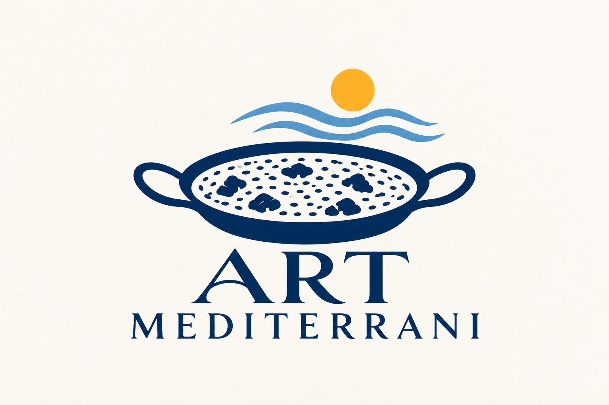

Paellas y eventos
El arroz, el oficio y el placer de compartir. Cocina en directo para tus celebraciones.
PAELLAS AUTÉNTICAS & COCINA MEDITERRÁNEA
Chef privado · Eventos · Talleres de cocina
Paellas auténticas, cocina artesanal en directo y el placer de reunirse. Imaginemos una experiencia a tu medida.

EL ARTE DE RECIBIR
Alrededor de una paella empiezan las conversaciones y se alargan los buenos momentos. ART MEDITERRANI te acompaña con una cocina generosa, respeto al producto y atención personal a tu evento.
El arroz, el oficio y el placer de compartir. Cocina en directo para tus celebraciones.
Una experiencia mediterránea personalizada, pensada para tus gustos y tu mesa.
Un momento para descubrir y compartir las técnicas de la cocina mediterránea.
Mesas pequeñas o grandes: comensales a convenir.
Imaginemos tu evento ↗